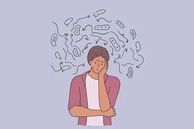

The Troubles of Today

Introduction to Mental Health
Mental health is very important for individuals of all ages, races, genders, sexualities, and more. The effects of bad mental health are nondiscriminatory, meaning that it can affect anyone and everyone. There are many different effects and types of mental health disorders. Mental health has always been a frequently occurring issue, however, recently individuals on social media have been more open toward these discussions.
14.3% of deaths globally are considered to be linked to mental illness. Approximately 8 to 9 million people die each year. These conditions have an impact on people's physical and emotional health. These illnesses should be given top priority since they are widespread in modern society, each type has a unique origin and effect, and understanding the technical aspects of these diseases is necessary to comprehend the impacts and treatment options.
The emotional, psychological, physical, and social effects on people are vital information on mental health in general. It can affect how people think, feel, and act as well as how they handle stress, make decisions, and handle conversations. Since mental health impacts people of all ages, it is imperative that it be given top importance at all ages, from childhood to adulthood.
Motivate Me
"Our greatest glory is not in never failing, but in rising every time we fall" ~ Confucius
"In order to move on, you must understand why you felt what you did and why you no longer need to feel it" ~ Mitch Albom
"Remember, happiness doesn't depend on who you are or what you have. It depends solely upon what you think" ~ Dale Carnegie
"You're like a grey sky. You're beautiful, even though you don't want to be" ~ Jasmine Warga
"Be not afraid of life. Believe that life is worth living, and your belief will help create the fact" ~ William James
"Keep walking through the storm. Your rainbow is waiting on the other side" ~ Heather Stillufsen
Glossary (Description List)
- Mental Health:
- A state of mental well-being that enables people to cope with the stresses of life, realize their abilities, learn well and work well, and contribute to their community.
- Anxiety:
- An abnormal and overwhelming sense of apprehension and fear often marked by physical signs (such as tension, sweating, and increased pulse rate), by doubt concerning the reality and nature of the threat, and by self-doubt about one's capacity to cope with it
- Depression:
- A mood disorder that is marked by varying degrees of sadness, despair, and loneliness and that is typically accompanied by inactivity, guilt, loss of concentration, social withdrawal, sleep disturbances, and sometimes suicidal tendencies